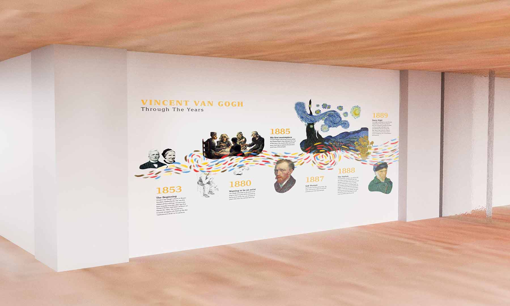
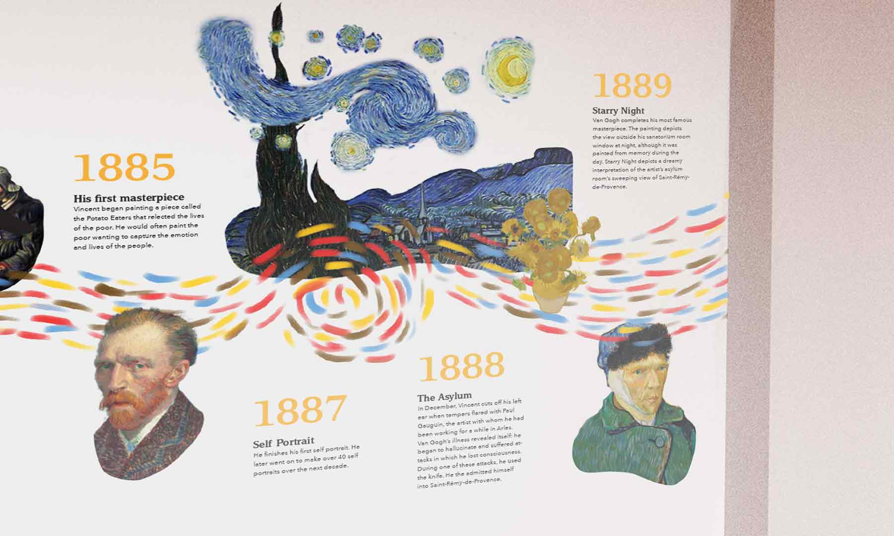
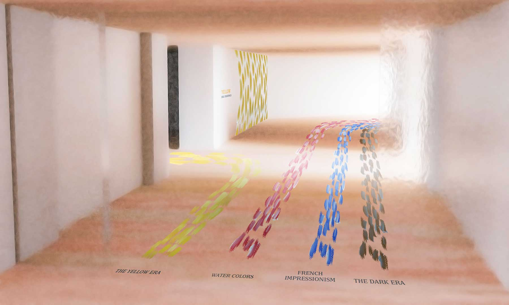

Vincent Van Gogh Exhibition
Art Gallery
This art gallery brings to life Van Gogh’s art and state of mind. The brush strokes are used in the way finding to show the progression through the different colors and stages of his work and allows viewers to experience first-hand the emotions in his work.


